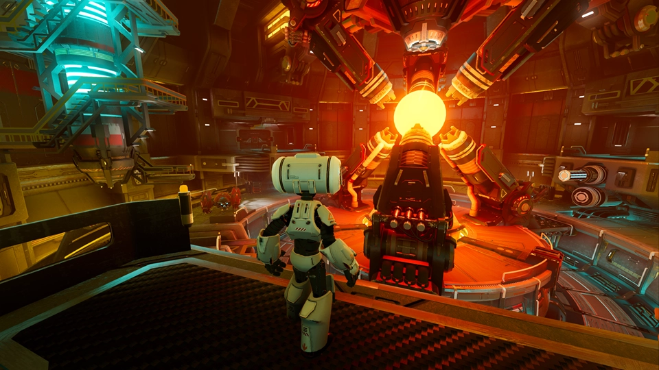
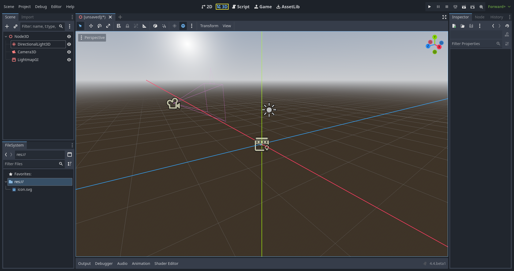
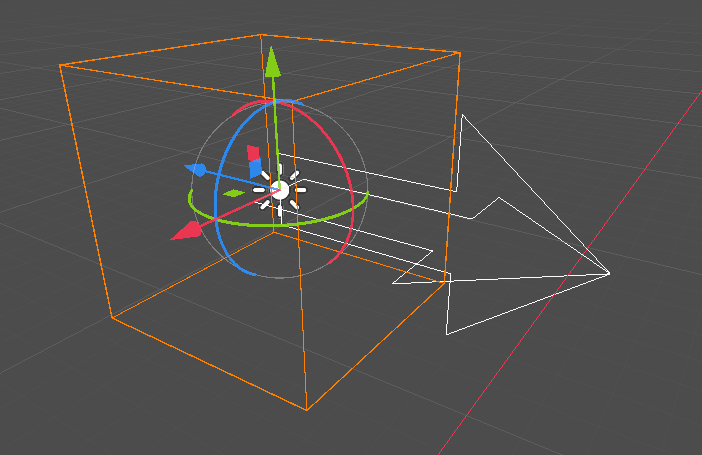
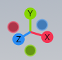
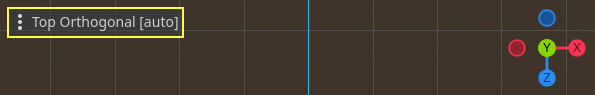
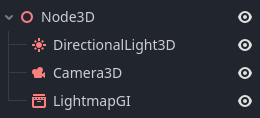
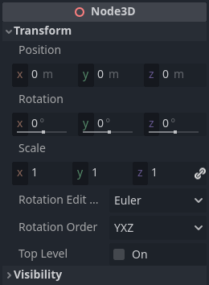

Introduction to 3D
Creating a 3D game can be challenging. That extra Z coordinate makes many of the common techniques that helped to make 2D games simpler no longer work. To aid in this transition, it is worth mentioning that Godot uses similar APIs for 2D and 3D. Most nodes are the same and are present in both 2D and 3D versions. In fact, it is worth checking the 3D platformer tutorial, or the 3D kinematic character tutorials, which are almost identical to their 2D counterparts.

Godot Third Person Shooter (TPS) Demo, available on the Github repository or the Asset Library.
In 3D, math is a little more complex than in 2D. For an introduction to the relevant math written for game developers, not mathematicians or engineers, check out Vector math and Using 3D transforms.
3D workspace
Editing 3D scenes is done in the 3D workspace. This workspace can be selected manually, but it will be automatically selected when a Node3D node is selected.

Similar to 2D, the tabs below the workspace selector are used to change between currently opened scenes or create a new one using the plus (+) button. The left and right docks should be familiar from editor introduction.
Below the scene selector, the main toolbar is visible, and beneath the main toolbar is the 3D viewport.
Main toolbar
Some buttons in the main toolbar are the same as those in the 2D workspace. A brief explanation is given with the shortcut if the mouse cursor is hovered over a button for one second. Some buttons may have additional functionality if another keypress is performed. A recap of main functionality of each button with its default shortcut is provided below from left to right:

Transform Mode (Q): Enables a combined move + rotation mode for the selected nodes.
Move Mode (W): Enables move (or translate) mode for the selected nodes. See Space and manipulation gizmos for more details.
Rotate Mode (E): Enables rotation mode for the selected nodes. See Space and manipulation gizmos for more details.
Scale Mode (R): Enables scaling and displays scaling gizmos in different axes for the selected nodes. See Space and manipulation gizmos for more details.
Select Mode (V): Allows selection of nodes in the viewport. Left clicking on a node to select one. Left clicking and dragging a rectangle selects all nodes within the rectangle's boundaries, once released. Holding Shift while selecting adds more nodes to the selection. Clicking on a selected node while holding Shift deselects the node. In this mode, you can use the gizmos to perform movement or rotation.
Show the list of selectable nodes at the clicked position: As the description suggests, this provides a list of selectable nodes at the clicked position as a context menu, if there is more than one node in the clicked area.
Lock (Ctrl + L) the selected nodes, preventing selection and movement in the viewport. Clicking the button again (or using Ctrl + Shift + L) unlocks the selected nodes. Locked nodes can only be selected in the scene tree. They can easily be identified with a padlock next to their node names in the scene tree. Clicking on this padlock also unlocks the nodes.
Group selected nodes (Ctrl + G). This allows selection of the root node if any of the children are selected. Using Ctrl + G ungroups them. Additionally, clicking the ungroup button in the scene tree performs the same action.
Ruler Mode (M): When enabled you can click and drag to measure distance in the scene in meters.
Use Local Space (T): If enabled, gizmos of a node are drawn using the current node's rotation angle instead of the global viewport axes.
Use Snap (Y): If enabled, movement, and rotation snap to grid. Snapping can also temporarily be activated using Ctrl while performing the action. The settings for changing snap options are explained below.
Use Trackball (U): When enabled, dragging the center of a node (represented by a subtle ray disc highlight) will rotate the node like a physical trackball.
Preserve Children Transform (P): When enabled, transforming a node will preserve the global transform of its children.
Toggle preview sunlight: If no DirectionalLight3D exist in the scene, a preview of sunlight can be used as a light source. See Preview environment and light for more details.
Toggle preview environment: If no WorldEnvironment exists in the scene, a preview of the environment can be used as a placeholder. See Preview environment and light for more details.
Edit Sun and Environment Settings (three dots): Opens the menu to configure preview sunlight and environment settings. See Preview environment and light for more details.
Transform menu: It has three options:
Snap Object to Floor: Snaps an object to a solid floor.
Transform Dialog: Opens a dialog to adjust transform parameters (translate, rotate, scale, and transform) manually.
Snap Settings: Allows you to change transform, rotate snap (in degrees), and scale snap (in percent) settings.
View menu: Controls the view options and enables additional viewports:

In this menu, you can also show/hide grids, which are set to 1x1 meter by default, and the origin, where the blue, green, and red axis lines intersect. Moreover, specific types of gizmos can be toggled in this menu.

An open eye means that the gizmo is visible, a closed eye means it is hidden. A half-open eye means that it is also visible through opaque surfaces.
Clicking on Settings in this view menu opens a window to change the Vertical Field of View (VFOV) parameter (in degrees), Z-Near, and Z-Far values.
Next to the View menu, additional buttons may be visible. In the toolbar image at the beginning of this chapter, an additional Mesh button appears because a MeshInstance3D is selected. This menu provides some quick actions or tools to work on a specific node or selection.
View menu of viewport
Below the Select tool, in the 3D viewport, clicking on the three dots opens the View menu for the viewport. Hiding all shown gizmos in the editor's 3D view can also be performed through this menu:

This menu also displays the current view type and enables quick adjustment of the viewport's viewing angle. Additionally, it offers options to modify the appearance of nodes within the viewport.
Coordinate system
Godot uses the metric system for everything in 3D, with 1 unit being equal to 1 meter. Physics and other areas are tuned for this scale. Therefore, attempting to use a different scale is usually a bad idea (unless you know what you are doing).
When working with 3D assets, it's always best to work in the correct scale (set the unit to metric in your 3D modeling software). Godot allows scaling post-import and, while this works in most cases, in rare situations it may introduce floating-point precision issues (and thus, glitches or artifacts) in delicate areas such as rendering or physics. Make sure your artists always work in the right scale!
The Y coordinate is used for "up". As for the horizontal X/Z axes, Godot uses a right-handed coordinate system. This means that for most objects that need alignment (such as lights or cameras), the Z axis is used as a "pointing towards" direction. This convention roughly means that:
X is sides
Y is up/down
Z is front/back
See this chart for comparison with other 3D software:

Image by Freya Holmér
Space and manipulation gizmos
Moving, rotating, and scaling objects in the 3D view is done through the manipulator gizmos. Each axis is represented by a color: Red, Green, Blue represent X, Y, Z respectively. This convention applies to the grid and other gizmos too (and also to the shader language, ordering of components for Vector3, Color, etc.).

Some useful keybindings:
To snap placement or rotation, press Ctrl while moving, scaling, or rotating.
To center the view on the selected object, press F.
In the viewport, the arrows can be clicked and held to move the object on an axis. The arcs can be clicked and held to rotate the object. To lock one axis and move the object freely in the other two axes, the colored rectangles can be clicked, held, and dragged.
If the transform mode is changed from Select Mode to Scale Mode, the arrows will be replaced by cubes, which can be dragged to scale an object as if the object is being moved.
Navigating the 3D environment
In 3D environments, it is often important to adjust the viewpoint or angle from which you are viewing the scene. In Godot, navigating the 3D environment in the viewport (or spatial editor) can be done in multiple ways.
The default 3D scene navigation controls are similar to Blender (aiming to have some sort of consistency in the free software pipeline), but options are included to customize mouse buttons and behavior to be similar to other tools in the Editor Settings. To change the controls to Maya or Modo controls, you can navigate to Editor Settings > Editors > 3D. Then, under Navigation, search for Navigation Scheme.

Using the default settings, the following shortcuts control how one can navigate in the viewport:
Pressing the middle mouse button and dragging the mouse allows you to orbit around the center of what is on the screen.
It is also possible to left-click and hold the manipulator gizmo located on the top right of the viewport to orbit around the center:

Left-clicking on one of the colored circles will set the view to the chosen orthogonal and the viewport's view menu will be updated accordingly.

If the Perspective view is enabled on the viewport (can be seen on the viewport's View menu, not the View menu on the main toolbar), holding down the right mouse button on the viewport or pressing Shift + F switches to "free-look" mode. In this mode you can move the mouse to look around, use the W A S D keys to fly around the view, E to go up, and Q to go down. To disable this mode, release the right mouse button or press Shift + F again.
In the free-look mode, you can temporarily increase the flying speed using Shift or decrease it using Alt. To change and keep the speed modifier use mouse wheel up or mouse wheel down, to increase or decrease it, respectively.
In orthogonal mode, holding the right mouse button will pan the view instead. Use Keypad 5 to toggle between perspective and orthogonal view.
Using Blender-style transform shortcuts
Since Godot 4.2, you can enable Blender-style shortcuts for translating, rotating and scaling nodes. In Blender, these shortcuts are:
G for translating
R for rotating
S for scaling
After pressing a shortcut key while focusing on the 3D editor viewport, move the mouse or enter a number to move the selected node(s) by the specified amount in 3D units. You can constrain movement to a specific axis by specifying the axis as a letter, then the distance (if entering a value with the keyboard).
For instance, to move the selection upwards by 2.5 units, enter the following sequence in order (Y+ is upwards in Godot):
G-Y-2-.-5-Enter
To use Blender-style transform shortcuts in Godot, go to the Editor Settings' Shortcuts tab, then in the Spatial Editor section:
Bind Begin Translate Transformation to G.
Bind Begin Rotate Transformation to R.
Bind Begin Scale Transformation to S.
Finally, unbind Scale Mode so that its shortcut won't conflict with Begin Rotate Transformation.
Node3D node
Node2D is the base node for 2D. Control is the base node for everything GUI. Following this reasoning, the 3D engine uses the Node3D node for everything 3D.

Node3Ds have a local transform, which is relative to the parent node (as long as the parent node is also of or inherits from the type Node3D). This transform can be accessed as a 3×4 Transform3D, or as 3 Vector3 members representing location, Euler rotation (X, Y and Z angles) and scale.

3D content
Unlike 2D, where loading image content and drawing is straightforward, 3D is a little more difficult. The content needs to be created with special 3D tools (also called Digital Content Creation tools, or DCCs) and exported to an exchange file format to be imported in Godot. This is required since 3D formats are not as standardized as images.
Generated geometry
It is possible to create custom geometry by using the ArrayMesh resource directly. Simply create your arrays and use the ArrayMesh.add_surface_from_arrays() function. A helper class is also available, SurfaceTool, which provides a more straightforward API and helpers for indexing, generating normals, tangents, etc.
In any case, this method is meant for generating static geometry (models that will not be updated often), as creating vertex arrays and submitting them to the 3D API has a significant performance cost.
Note
To learn about prototyping inside Godot or using external tools, see Prototyping levels with CSG.
Immediate geometry
If, instead, you need to generate simple geometry that will be updated often, Godot provides a special ImmediateMesh resource that can be used in a MeshInstance3D node. This provides an OpenGL 1.x-style immediate-mode API to create points, lines, triangles, etc.
2D in 3D
While Godot packs a powerful 2D engine, many types of games use 2D in a 3D environment. By using a fixed camera (either orthogonal or perspective) that does not rotate, nodes such as Sprite3D and AnimatedSprite3D can be used to create 2D games that take advantage of mixing with 3D backgrounds, more realistic parallax, lighting/shadow effects, etc.
The disadvantage is, of course, that added complexity and reduced performance in comparison to plain 2D, as well as the lack of reference of working in pixels.
Environment
Besides editing a scene, it is often common to edit the environment. Godot provides a WorldEnvironment node that allows changing the background color, mode (as in, put a skybox), and applying several types of built-in post-processing effects. Environments can also be overridden in the Camera.
Preview environment and light
By default, any 3D scene that doesn't have a WorldEnvironment node, or a DirectionalLight3D, will have a preview turned on for what it's missing to light the scene.
The preview light and environment will only be visible in the scene while in the editor. If you run the scene or export the project they will not affect the scene.
The preview light and environment can be turned on or off from the top menu by clicking on their respective icon.

The three dots dropdown menu next to those icons can be used to adjust the properties of the preview environment and light if they are enabled.

The same preview sun and environment is used for every scene in the same project, So only make adjustments that would apply to all of the scenes you will need a preview light and environment for.
Cameras
No matter how many objects are placed in the 3D space, nothing will be displayed unless a Camera3D is also added to the scene. Cameras can work in either orthogonal or perspective projections:

Cameras are associated with (and only display to) a parent or grandparent viewport. Since the root of the scene tree is a viewport, cameras will display on it by default, but if sub-viewports (either as render target or picture-in-picture) are desired, they need their own children cameras to display.

When dealing with multiple cameras, the following rules are enforced for each viewport:
If no cameras are present in the scene tree, the first one that enters it will become the active camera. Further cameras entering the scene will be ignored (unless they are set as current).
If a camera has the "current" property set, it will be used regardless of any other camera in the scene. If the property is set, it will become active, replacing the previous camera.
If an active camera leaves the scene tree, the first camera in tree-order will take its place.
Lights
The background environment emits some ambient light which appears on surfaces. Still, without any light sources placed in the scene, the scene will appear quite dark unless the background environment is very bright.
Most outdoor scenes have a directional light (the sun or moon), while indoor scenes typically have several positional lights (lamps, torches, …). See 3D lights and shadows for more information on setting up lights in Godot.